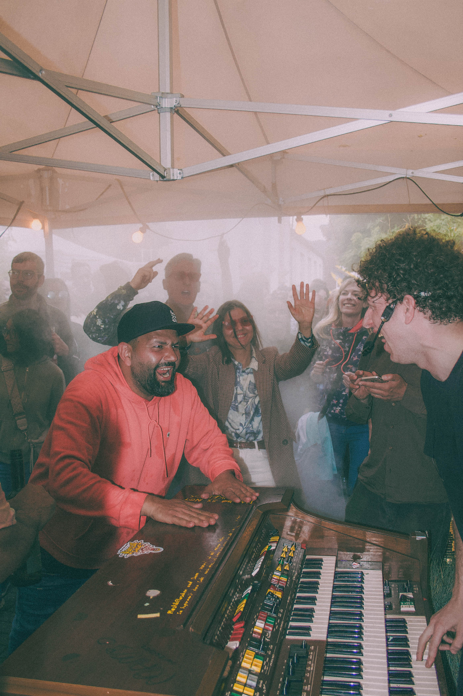
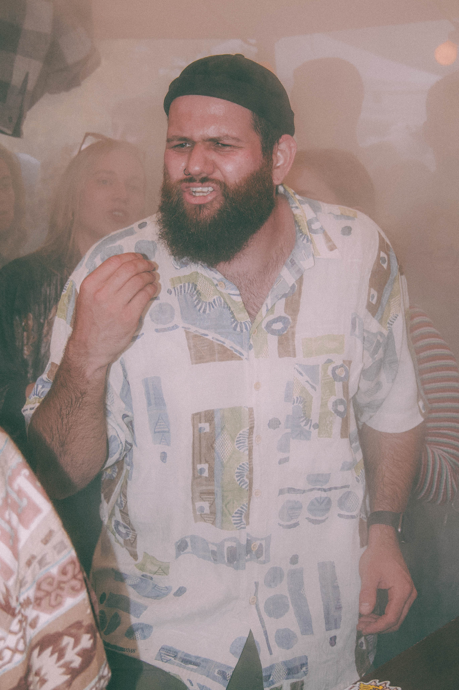
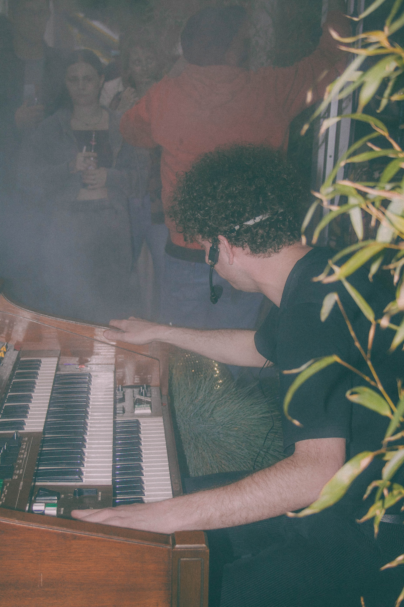
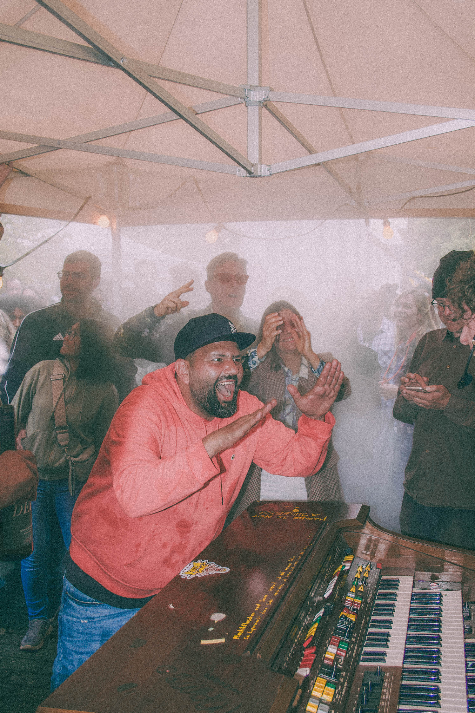
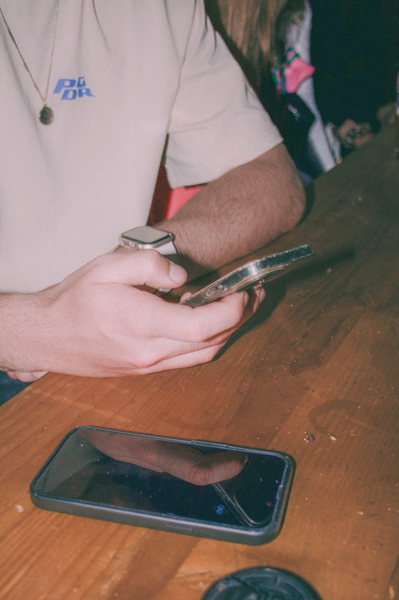

Street Photography
Street Photography

Einfangen des urbanen Lebens.
Der Trödelkiez 2024 in Trier-West bei der Europäischen Kunstakademie war eine faszinierende Kulisse für Street Photography. Dieses Projekt widmet sich der Kunst, flüchtige Momente, unerwartete Begegnungen und die einzigartige Atmosphäre des Flohmarktes einzufangen.
Mein Ziel war es, die Geschichten hinter den Gesichtern und Objekten zu erzählen, ohne dabei die Authentizität des Augenblicks zu verlieren. Jedes Bild ist ein Fragment des pulsierenden Lebens, das sich an diesem besonderen Ort entfaltet.



